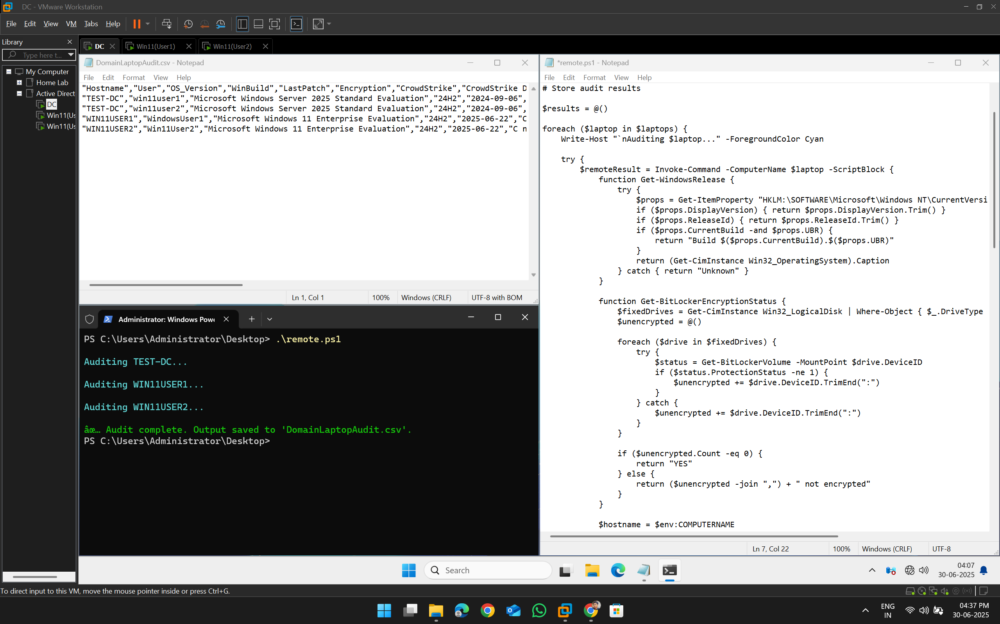
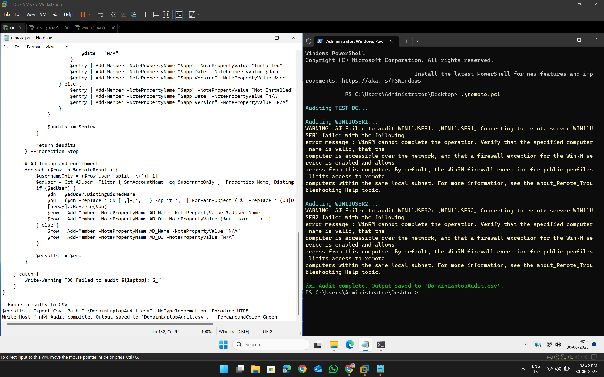

🔍 Objective
Build and execute a fully remote audit script that collects critical data from all Windows laptops in a domain from a central administrator machine or Domain Controller, without logging into each endpoint manually.
This includes:
- OS version and build info
- BitLocker encryption status
- Latest installed Windows updates
- Installation status, version, and install date of CrowdStrike and Netskope
- Local user accounts
- Active Directory Display Name and OU Hierarchy
The result: centralized visibility and scalable domain-wide auditing.
✅ Prerequisites
- Lab Setup
- One Domain Controller (e.g.,
TEST-DC) - Multiple domain-joined Windows clients (e.g.,
WIN11USER1,WIN11USER2)
- One Domain Controller (e.g.,
- Enable PowerShell Remoting on Clients
On each client (run as Administrator):Enable-PSRemoting -Force - Allow WinRM on All Profiles (Firewall Rule)
On each client:New-NetFirewallRule -Name "AllowWinRM-All" -DisplayName "Allow WinRM on all profiles" \ -Enabled True -Profile Any -Action Allow -Direction Inbound -Protocol TCP -LocalPort 5985 - Test Connectivity from Admin Machine
FromTEST-DCor the admin machine:Test-WSMan WIN11USER1 Test-WSMan WIN11USER2✅ You should get a valid WSMan response. If not, troubleshoot WinRM.
🧪 Script Overview
Filename: remote.ps1
Location: /code/remote.ps1
The script:
- Uses
Get-ADComputerto fetch all domain machines - Connects via
Invoke-Commandusing WinRM - Extracts and formats:
- Hostname, OS version, build info
- Patch date and BitLocker status
- Local user list
- App install data (CrowdStrike & Netskope)
- Active Directory
NameandOU Path
- Saves everything to a single
.csv:DomainLaptopAudit.csv
📂 Output Format
| Field | Description |
|---|---|
| Hostname | Target machine name |
| User | Local user account |
| OS_Version | Windows edition (e.g., Windows 11 Pro) |
| WinBuild | Release ID or full build (e.g., Build 22631.2861) |
| LastPatch | Most recent patch date |
| Encryption | BitLocker status (YES or drives not encrypted) |
| CrowdStrike / Netskope | Installed / Not Installed |
| App Date | Install date |
| App Version | Installed version |
| AD_Name | Domain user's full name |
| AD_OU | Active Directory OU hierarchy (e.g., Research ➝ Security ➝ India) |
💡 Error Handling
If a remote machine is offline or unreachable, the script logs:
WARNING: ❌ Failed to audit WIN11USERX: ...The script then continues auditing the rest — no interruption.
🟢 Execution
Run this script only from a domain-joined machine with AD privileges:
.\remote.ps1The result will be saved to:
.\DomainLaptopAudit.csv🧠 Efficiency & Scale Considerations
❓ What if I have 10,000 laptops and not all are online?
✅ Possible solutions:
- Skip audited machines: Modify the script to check if machine already exists in the CSV — skip if so.
- Track status logs: Add a separate
.logfile to record which machines failed or completed. - Use batching: Audit in batches of 500–1000 devices at a time using
-Firstfilter or chunking logic. - Scheduled scans: Use Task Scheduler to run the script every 12 hours and continue where it left off.
- Optimize memory: Don’t audit all simultaneously; serialize calls with slight delays between batches.
⛳️ Tool exploration: ManageEngine Endpoint Central (formerly Desktop Central) can provide GUI-based centralized audit deployment with built-in inventory management.
📸 Screenshot
When Device is Active
When Device is Not Active
🏁 Summary
This part completes the journey from single-device local audit to enterprise-wide remote audits across thousands of Windows laptops.
The system is now:
- Automated
- Centralized
- Scalable
- AD-integrated
- Audit-ready for enterprise needs
🗃️ Files in This Part
remote.ps1→ Main PowerShell scriptDomainLaptopAudit.csv→ Output fileexecution_logs/→ (Optional) error & status logs per run
🔜 Future Work (Optional Ideas)
- 🧪 Add vulnerability scans for outdated apps
- 📡 Deploy via GPO startup scripts or SCCM
- 📊 Build a dashboard to visualize audit results
- 💬 Add Slack/Email alerts for non-compliant systems